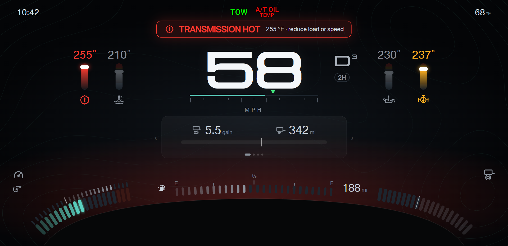
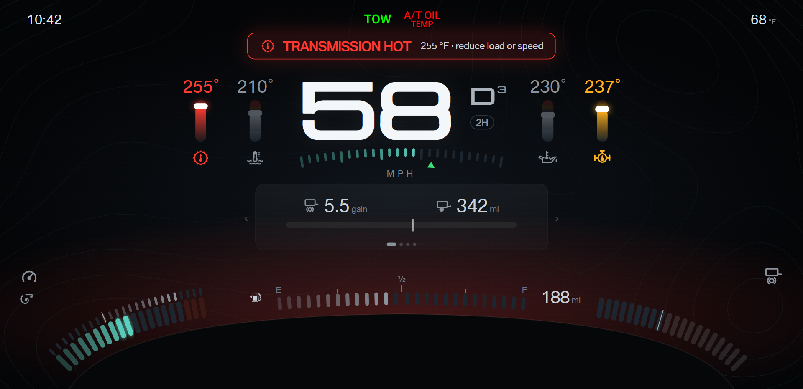

F150 cluster · Design round 19 · Drive modes, speed scale, and cruise on Towing A
Towing A is locked as the center axis layout from round 18 (option B). Round 19 adds the drive modes, a speed scale, and the cruise states.
Picked: A · Ruler. The speed scale is a straight bar under the speed digits, with ticks every 10 mph and the cruise mark.
- Drive mode: the chip under the gear. 2H is a grey outline; 4A, 4H, and 4L fill. The rear locker adds an amber chip with a padlock. Field: getGearAwd() (mFord4wd); rear locker: alarmTable[76], pending verification on the truck.
- Cruise: the stock readout at top center, above the speed. The cruise symbol and the set speed only (no SET, ACC, or MPH text); the limiter keeps the LIM tag.
The set speed also shows as a mark on the speed scale: green for cruise and adaptive cruise, white for the limiter. An alert banner covers the readout; the mark stays.
- Speed digits center on the center line. The gear and the temperature bars sit outside the width of three digits, so one, two, and three digits all stay centered and nothing else moves.
- Speed scale: 0 to 100 mph under the speed digits, filled in the accent colour, with no numbers (the digits carry the number). MPH moves under the scale.
- A · Ruler: a straight bar with ticks every 10 mph. B · Arch: segments on an arch that echoes the shroud and the corner bands.
A · Ruler
cruise set during an alert: the banner covers the readout; the mark stays

B · Arch
cruise set during an alert: the banner covers the readout; the mark stays
